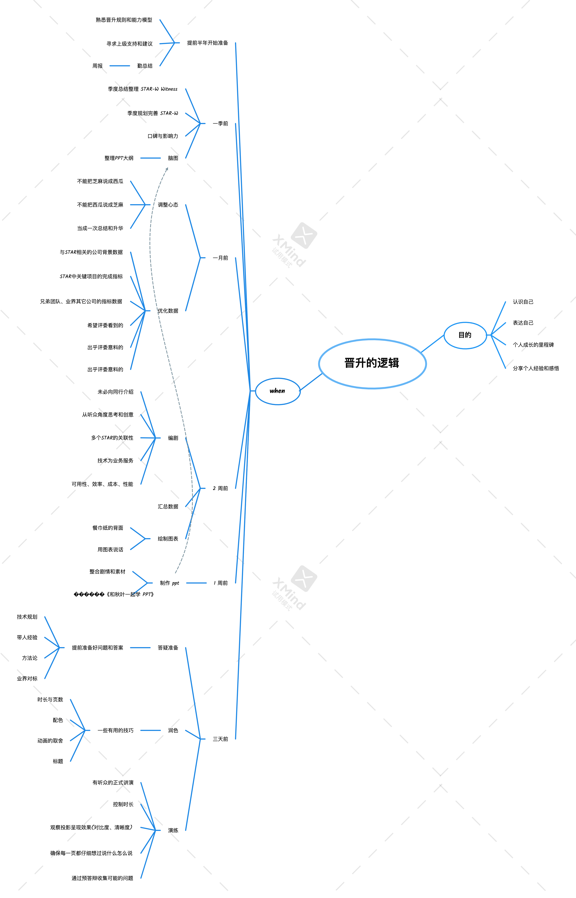

面向职场编程
学习的衰减和回归
- 读了 100 分的书籍。
- 只能学会 80 分的知识。
- 做出 60 分的软件。
- 参加多人协同的项目，最后只能拿到 40 分的产出。
- 去参加晋升评审的时候，因为讲得不够好，只能得到 20 分的输出效果
提升自己的职场收获的法门有：在 1 上加大努力，让 5 也跟随 1 增长；练习 soft skill，让 4 和 5 的衰减变少。
不闻不若闻之,闻之不若见之,见之不若知之,知之不若行之。没有输入，谈不上学习；没有复制，谈不上学习；没有创造与运用，谈不上学习。学习就好像爬喜马拉雅山，你从北坡上山，要从南坡下山，你体会的山才完整，没有体会过知识的接受者视角和使用者视角的经历的是不完整的。
上士闻道，勤而行之；中士闻道，若存若亡；下士闻道，大笑之。
不笑不足以为道。
故建言有之：明道若昧；进道若退；夷道若颣；上德若谷，大白若辱，广德若不足，建德若偷，质真若渝；大方无隅；大器晚成；大音希声；大象无形。
道隐无名。
夫唯道，善始且善成。
从信仰者成为践行者。
职位的 max 和 min
不要让评委进入 min 模式，那样评委很容易成为你的挑战者。不要让评委进入攻击者模式。
引导评委
作为个体贡献者（individual contributor）， 会做是一种低阶能力，会定义是一种高阶能力。对组织有高价值的员工，通常有发现问题、解决问题的能力。ppt 里面只体现了拿结果，是经不住深度追问的。发现问题、定目标、排计划、拿结果、适度复盘、总结方法论等种种能力，构成了复合型人才的能力闭环。好的人才，能够在答辩的过程中把评委的思考带入闭环中。
平台的加成效应
单量规模、web scale 本身都会给评委加上潜移默化的印象分。然而，在小团队中做技术方案，如果横向看过兄弟团队的技术方案，能够做出适配自身场景的选择，也能得到评委的认可。
IC 的一个主要晋升关卡
因为业务发展迅速，L7、P6 这一级别容易成为被重点培养的人才，一般会成为核心系统的主要负责人， 主要关注的是高性能、大容量的可用性、稳定性和资金安全问题。
评委怎么看待 ROI
对某些业务进行指标优化，有时候不能盲目追求最优解，roi 最好的解是经验解。你有什么指标能够让评委和你可以产生相同的决策-普适性的逻辑很重要。
ppt 与长短板
面试的呈现效果不完全由 ppt 决定。有的候选人的技术底蕴非常深厚。做技术尝试，看到可能性和把可能性落地，需要创新、担当和勇气。如果真的是做技术做得脚踏实地，不要怕被评委问，也不会被评委问倒。而有些候选人的 ppt 堆砌痕迹明显，临时抱佛脚是经不住评委问的。举一反三、倒背如流的候选人可以折服评委，反之则会给评委留下露怯的印象。所以写在晋升材料上的技术问题，一定要看得准一点。晋升面试可能把长板问出来，也可能把短板问出来。
后台通道讲系统通道的东西
ppt 里面涉及大量领域知识、业务流程和横向工作领域，对于大部分候选人而言是个容易减分的选项。后台通道的晋升面试里，高性能、高并发的问题永远都是鲜明的问题，而后台通道的候选人试图讲系统通道的复杂性，很难讲好，不容易引起评委的认同，容易得到“希望加强技术深度”或者“专注某个领域的评语”。回答这类问题的时候，如果候选人不能斩钉截铁地让评委相信，自己能够把控业务的复杂发展，可以尽量淡化评委对这些问题的关注。
业务团队与中间件
公司的技术组件的产品化非常好，在关键技术方案里借助公司的技术组件是漂亮和聪明的做法。但有的评委，随便问了几个技术组件的基本使用方法和原理问题，候选人就茫然无语，就造成了大大减分。
从上方入手看问题的认知方法
L8/P7的评委使用的话语体系普遍比候选人要抽象，L6/P6 级别优秀的候选人能够对答如流是因为他们已经有了高阶的能力-体系化思考、结构化表达。这类候选人晋升成功是水到渠成的，他们能够到达 L7/P6，是因为他们接近了 L8/P7 。所以练沟通基本功，是弥补自己思考、做事闭环短板的一种方式。
晋升只是副奖
评委的俯视视角很容易看出候选人看不到的问题，这是一种信息差。但评委也不一定就真的能够总是躬身入局，体验到做事的真正价值和能力提升。无论如何，能够为组织拿到结果就是难能可贵的。相比起个人能力的全面发展，晋升结果只是副奖。晋升的流程，对大家而言只是一个“引导大家总结和思考”的大过滤器。因为种种阴差阳错的偏差，过不去这个过滤器也是正常的。大家平时还是要努力，功夫在诗外。我们作为业务团队的工程师，要坚持做顶天（持续向上突破技术难题）立地（扎根业务创造价值）的工程师。
后发优势与与时俱进
部分候选人的技术观念非常与时俱进，超出了评委（主要是我）当初处于同一阶段时的水平，可见技术上后发优势效应在人才发展上的体现。这批人才应该好好培养。
晋升的逻辑

晋升 ppt 的结构
个人介绍
- 原工作公司和时间
- 你所从事的岗位或职责
- 你所主导的项目
- 如果可能，呈现一下价值（可选）
组织架构与工作职责
- 说清楚所属的组织架构
- 说清楚自己在整个架构中的位置
- 说清楚自己的上下游和横向关系
- 说清楚工作职责
业绩贡献
- 最多只能描述3个项目
- 每个项目用STAR解读，案例化
- 描述三个关健问题
- 我们的业务是什么？
- 我们的客户是谁？
- 我们为客户提供的价值是什么？
- 抽象出方法论
专业贡献
方法论沉淀
工作心得、方法论或案例沉淀等总结
知识传播
分享过的课程：如主题、背景、参与对象及人数、分享次数
人才培养
导师制辅导的人数、频次、结果
未来规划
自我总结
- 对自身能力的长短板进行总结
- 建议针对专业能力模型，进行我能力评价，说明优势以及不足
未来规划
- 工作方向
- 个人成长方向
- 提升能力的计划（待发展项、发展方式等）
注意
不要写流水账
技巧
规划
以终为始，以始为终，方得始终。
以终为始
- 终：目标
- 一种逆向思维：从最终目标倒推，反向分析，思考方案和策略，然后采取行动
- 成长与发展：有的放矢 Vs 随缘放矢。
评委的挑战：缺乏技术能力建设的系统思考，没有体现技术专业性。
怎么定目标
- 职级能力模型
- 目标职级的同事
- 实际工作对更高职级的需要
- 上级的要求
评委的挑战：讲不清楚从业务到技术的拆解。
怎么拆目标
- 核心指标 -> 实际项目
- 业务问题 -> 技术方案
- 职级要求 -> 成长行动
合逻辑：
- 要有合理性，经得起推敲。
- 不能是空中楼阁，毫无根基。
以始为终
- 初：初心
- 不要背离服务业务的宗旨，要多干能产生实际价值的事情。
- 不要过度追求技巧，要秉持成长和发展的初心。
评委的挑战：
- 技术方案不符合业务特性。
- 止步于技术指标，与业务关系讲不清楚。
- 技术方案过度包装，过于追求技术复杂性，没有从业务目标出发深入考虑技术方案合理性。
行动
知行合一。
以知促行
知从何处来：
内：深厚的业务和专业知识
平时的学习积累
外：对标
- 瞄准鳌头：
- 找行业标杆（最好、最强大的竞对）
- 以其为镜，可以明得失
- 看全吃透
- 要做全面和深入的调研
- 不要流于形式，为对标而对边
- 学以致用
- 思考同行为什么这么做
- 反思自己为什么没有做
- 求知心态
- 要抱着学习的心态，多找自身的不足，不要故意去踩同行
- 不要临时抱佛脚
以行促知
评委的挑战：
- 业务理解不足，在业务关键问题的识别上缺乏思考。
- 专业能力欠缺，技术解决方案不成体系。
- 没有进行行业对标，极端情况连公司内部对标都没有做。
- 对标不够全面，深度不足；先有技术方案，在答辩时补齐对标。
怎么行动
- 按照认知，把行动落到实处
- 行动要有效、扎实、周全
- 通过行动来迭代认知
评委的挑战：
- 工作不贴合业务，对技术指标与业务结果的逻辑关系、相关性、兑换关系等摸不透
- 评测结果不扎实，指标体系不完备，工作成果的价值不令人信服
临场
厚积薄发
行神兼备
有形：方便查阅
- 答辩材料要成体系：
- 能够反映出业务理解、问题拆解、技术解决业务问题的体系（宏观 -> 中观 -> 微观）
- 能够反映出职级能力要求的体系（专业知识/专业能力/通用能力/专业影响力）
有神：令人信服
- 有逻辑
- 有效果
- 有亮点
- 有广度
- 有深度
- 有思考
评委的挑战：
- 答辩材料呈现差，工作无体系
- 缺少基线和内外部比较，无法判断工作是简单还是困难，技术挑战是否足够高
- 简单复用行业的通用解决方案，没有结合业务独特性进行针对性优化，缺少深度思考
应对从容
- 评委发问
- 听
- 问题要听清楚，不要“抢答”
- 要仔细体会问题的“重点”在哪
- 想
- 要克服条件反射（说话不经过大脑）、热血上头
- 想的源泉是平时的积累
- 说
- 表达要准确，用词准确，不引起歧义
- 尽量简洁干练，别啰嗦
评委的挑战：
- 答辩的同学和评委的对话不在一个频道上
- 回答问题表达啰嗦，不能切中肯綮；或顾左右而言他，岔开话题
心态
三省吾身
工作之余，多反思自己哪一点做得还行，还能不能进一步提高，哪一点做得不好，该怎么改进。不要放过每一个锻炼自己的机会，积跬步而致千里。
反求诸己
遇到不如意的事情，多从自己身上找原因，多给自己提更高要求，不要过度抱怨环境、抱怨规则。怨天尤人只会让自己的心态崩掉，看事情看不到全貌，作评价不够客观。
见贤思齐
看人先看他的优点，多想想自己是不是也可学到，能够提高成长。有鲜活的榜样在身边，学习成本低，这是老天给的机会，要抓住。